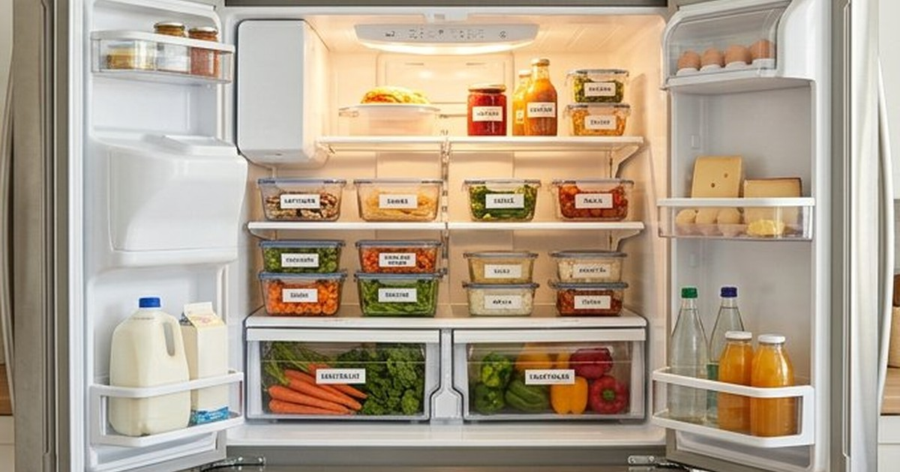

نصائح منزلية
ترتيب المنزل في 15 دقيقة يوميًا: خطة عملية
خطة مرنة لترتيب يومي قصير: نتيجة واحدة واضحة، مسار الغرف، وما لا تحمله إن كان يؤلم أو يهدد بالسقوط.
تنظيم الثلاجة: توزيع الرفوف، درجة الحرارة، تبريد البقايا، صندوق استخدم أولًا، وقائمة تسوق تقلل الهدر.

عند الشك في السلامة تخلّص من الطعام. درجة حرارة آمنة وتغليف محكم يقللان الفساد لا يلغيانه.
اضبط الثلاجة على 4 درجات مئوية أو أقل إن استطعت القياس. اللحوم النيئة في وعاء على الرف السفلي، والجاهز أعلى. اكتب تاريخ البقايا، وصندوق «استخدم أولًا» يُراجع قبل التسوق.
ميزان مستقل أرخص من تخمين زر الجهاز. الباب أدفأ. لا تملأ حتى تُسد فتحات الهواء. أزل الثلج السميك وفق دليل الجهاز.
| المكان | ماذا يوضع | لماذا |
|---|---|---|
| علوي | بقايا محكمة وأطعمة جاهزة | بعيد عن سوائل النيئ |
| أوسط | ألبان وبيض في عبوته | أثبت من الباب |
| سفلي | لحوم وأسماك في وعاء | التسرب لا يصل الكل |
| أدراج | خضار وفاكهة حسب الرطوبة | قوام أطول |
| باب | صلصات ومشروبات | تقلب حراري أكبر |
لا تترك قدرًا عميقًا ساخنًا ساعات على الطاولة. قسّم إلى علب ضحلة. أعد التسخين حتى يصبح ساخنًا بالكامل للكمية التي ستؤكل. الأرز المطبوخ حساس إن بقي في حرارة الغرفة؛ برّده بسرعة.
اشترِ أوراقًا وخضارًا تستهلكها فعلًا. الفريزر للحوم التي لن تُطهى قريبًا وفق إرشادات السلامة. لا تعتمد على «الخصم الكبير» إن لم يكن لديك خطة طهي.
قد يختلف عن تاريخ السلامة. استخدم حواسك والسياق، وعند الشك لا تخاطر.
الغسل قد يرش رذاذًا. الطبخ لدرجة آمنة أهم. نظف الحوض بعد أي تماس نيئ.
لا تغسل كل الأوراق قبل التخزين إن كان الماء يسرّع التلف؛ جفف إن غسلت. افصل ما يطلق إيثيلين بكثرة عن الورقيات إن لاحظت ذبولًا سريعًا. الأدراج ليست سلة مهملات للأكياس الممزقة.
إذابة في الثلاجة لا على الطاولة في الحر. السوائل في وعاء. لا تُعيد تجميد ما أُذيب تمامًا إلا بعد طبخ وفق إرشادات السلامة العامة.
البيض أأمن داخل الرف لا الباب في كثير من التوصيات لأن الباب يرتج. المربى والصلصات تناسب الباب. لا تخزن حليبًا مفتوحًا في الباب أيامًا في حر شديد إن كان الجهاز ضعيفًا.
تكديس حتى لا يدور الهواء فتتجمد الخس قرب الجدار الخلفي ويفسد اللبن في الباب. إذابة الدجاج على الطاولة في القيظ. حفظ بقايا أرز ساعات في القدر. نسيان درج الخضار أسبوعين. ضع قاعدة: ما يُطبخ أولًا في الأمام، والتاريخ على العلب الشفافة. امسح الانسكاب يوم حدوثه قبل أن يجف ويصير رائحة.
حرارة مضبوطة، نيئ معزول، تواريخ ظاهرة، وتسوق بعد الجرد. التنظيم عادة أسبوعية لا ديكور رفوف.
رُوجعت المعلومات العامة في هذا المقال بالاستناد إلى المصادر التالية. الروابط الخارجية قد تُحدّث محتواها بمرور الوقت.
خطة مرنة لترتيب يومي قصير: نتيجة واحدة واضحة، مسار الغرف، وما لا تحمله إن كان يؤلم أو يهدد بالسقوط.

دليل تنظيف بمواد بسيطة مع جدول للأسطح واحتياطات السلامة وما لا يجوز خلطه، والفرق بين التنظيف والتعقيم.

طرق عملية لتحديد مصدر الرائحة في المطبخ والحمام والغرف، وتحسين التهوية، ومتى تحتاج فنيًا أو طوارئ.